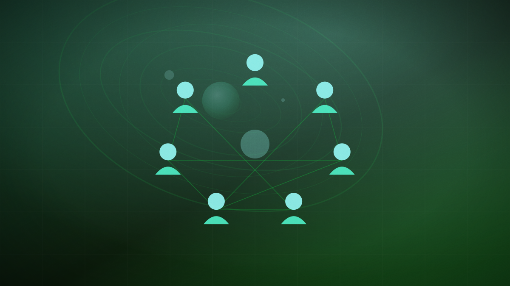

Reliance Jio expands cloud-based 'JioPC' to transform aging hardware into AI PCs
The service bypasses expensive hardware upgrades by streaming virtual machines from the cloud, targeting India's lengthening consumer PC replacement cycle.

Original cover art, generated for this story. THE VISSION does not republish third-party press imagery.
- Reliance Jio is expanding its JioPC cloud service to all internet users in India, regardless of their network provider, according to TechCrunch.
- The subscription streams virtual PCs with up to 8 virtual CPUs, 16GB of RAM, and 1TB of storage, aiming to make computers up to 8 years old 'AI-ready.'
- Subscriptions start at ₹1,000 (~$11) for a 2-month entry plan, scaling to ₹5,000 (~$53) annually for its top-tier virtual hardware configuration.
Reliance Jio, led by chairman Mukesh Ambani, is expanding its cloud-based JioPC service to all internet users across India, TechCrunch reported on September 2. The expansion makes the cloud-computing subscription available to users regardless of whether they use Jio's network infrastructure, aiming to democratize access to high-performance computing without requiring consumers to purchase expensive new hardware.
The service aims to transform aging personal computers — up to eight years old — into 'AI-ready' machines by hosting the operating system and processing power entirely in the cloud. Subscribers stream a virtual Windows PC, bypassing local hardware limitations. JioPC offers several hardware configurations, scaling up to 8 virtual CPUs, 16GB of RAM, and 1TB of cloud storage. The entry-level plan is priced at ₹1,000 (approximately $11) for two months, while the high-end 16GB/1TB annual tier costs ₹5,000 ($53).
According to analysts at IDC and CyberMedia Research, consumer PC replacement cycles in India have lengthened to five or six years due to high hardware costs. Jio's cloud-PC subscription targets this gap, offering a low-cost alternative for students, professionals, and small businesses needing modern computing capacity. India had an estimated 65 million PCs in active use in 2025, a figure projected to cross 69 million by the end of 2026.
As generative AI tools increase the compute demands of consumer applications, users with older laptops are being priced out of the ecosystem. JioPC's cloud expansion shifts the computing burden from the device to local data centers, allowing anyone with a basic internet connection to run advanced AI agents on an 8-year-old laptop. This model of 'virtualized hardware' could redefine consumer tech access in emerging markets, bypassing the physical hardware upgrade cycle and turning raw connectivity into a virtual hardware upgrade.